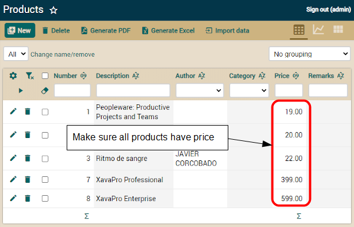

We saw how we can define totals from an external file, thus managing to keep the configuration parameters independent of our business logic, without the need to modify code to configure them. In this lesson, we will see how to modify the tables of our database using SQL statements, in order to learn how to modify the schema without losing information or data contained in it.
If you don't like videos follow the instructions below.
Manual schema evolution
When you use things like
@Calculation or
@DefaultValueCalculator the automatic evolution schema provides by OpenXava falls short, because it adds a new column when you add a new property, but it does not fill the column with the correct values. In this case we have added several persistent properties with
@Calculation whose values are not recalculated until the user interact with the record. Moreover, we have a default value for
vatPercentage that only has effect when the user creates a new record but not on the existing records. We have to fill the new columns with reasonable values.
Given that we're in early development stage just removing all the records would be a good enough solution, but for sure that is not a good idea in production, so we're going to adjust our database to new code without lose data to illustrate manual evolution schema.
The easier way is to use the application itself to do the updates. We're going to do it for updating the product prices. In order our new calculated properties work nicely all the products should have price, so go to the Product module with your browser and make sure that all products have price:

If some product has no price edit it and enter a price.
The next changes are not so simple, therefore we're going to execute SQL statements against our database. To execute these SQL statements, first make sure your application is running, then use the menu option
OpenXava > Database Manager of OpenXava Studio:

Now you are ready to write and execute SQLs.First, we set value for
pricePerUnit column in all details:
UPDATE INVOICING.COMMERCIALDOCUMENT_DETAILS
SET PRICEPERUNIT = (
SELECT PRICE FROM INVOICING.PRODUCT
WHERE NUMBER = PRODUCT_NUMBER
)
Then we update the vatPercentage for all invoices:
UPDATE INVOICING.COMMERCIALDOCUMENT
SET VATPERCENTAGE = 21
Next, the updating of vat:
UPDATE INVOICING.COMMERCIALDOCUMENT
SET VAT = (
SELECT SUM(PRICEPERUNIT * QUANTITY) * 0.21
FROM INVOICING.COMMERCIALDOCUMENT_DETAILS D
WHERE D.COMMERCIALDOCUMENT_OID = COMMERCIALDOCUMENT.OID
)
Finally, we update the totalAmount of all invoices:
UPDATE INVOICING.COMMERCIALDOCUMENT
SET TOTALAMOUNT = (
SELECT SUM(PRICEPERUNIT * QUANTITY) * 1.21
FROM INVOICING.COMMERCIALDOCUMENT_DETAILS D
WHERE D.COMMERCIALDOCUMENT_OID = COMMERCIALDOCUMENT.OID
)
Beware, the above sentences work nicely with HSQLDB, the database included with OpenXava. If you're using another database probably you have to adapt the syntax. After executing the above sentences you can try your application. It would behave as in figure that you can find in the section "Total properties of a collection" of lesson
12. @Calculation and collections totals, even for already existing invoices and orders.
Summary
In this lesson you have learned how to manually modify the database schema of our application using SQL statements, so that we do not lose information in a production environment.
Any problem with this lesson? Ask in the forum Everything fine? Go to Lesson 15